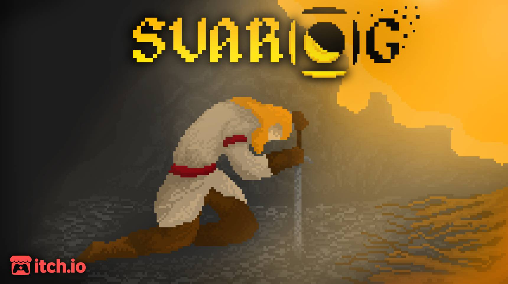
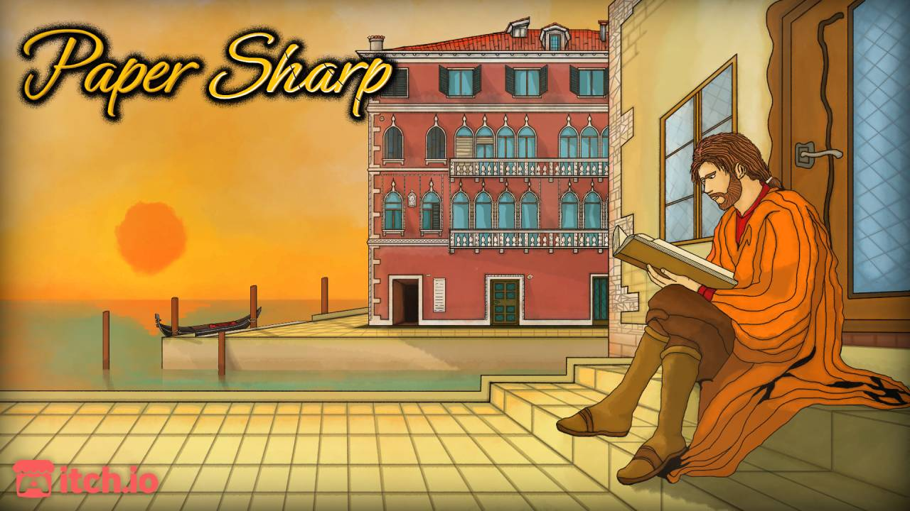
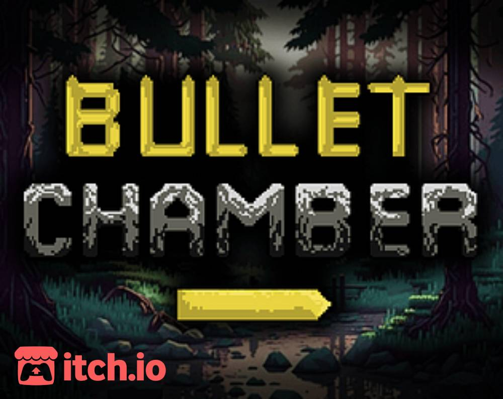
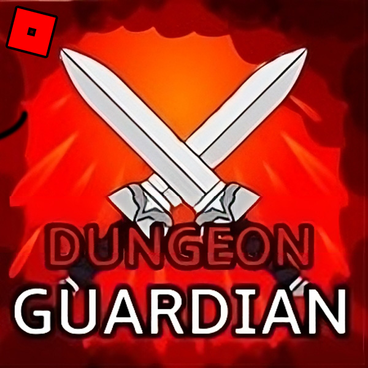

SVAROG
A 2D Pixel-Art Game Inspired by Slavic Mythology. This is the main game I'm working on. The project started back in, just when I recently learned the basics of Unity Game Engine. As a solo developer, I’ve poured my heart and soul into every aspect of this game—from the intricate pixel art to the immersive gameplay, except the music which is still a placeholder. It's still in early development and it will be fully released on Itch.io and Steam. Svarog won the 1st place in local high school competition in 2024. For additional details, visit Svarog’s Itch.io page. There, you’ll find lore snippets, concept art, and updates as the saga unfolds..
Itch.io: https://bloodassassin89.itch.io/svarog

Paper Sharp
As a high school project, my friends—Luka Pavičević and Stefan Jovčić—and I embarked on an exciting journey to create a game set in the vibrant streets of 17th century Venice. Our game combines mathematical challenges with historical intrigue. We won the 1st place in local high school competition in 2023 along with the 2nd place in Neumann IT competition in Hungary. I served as the project lead, handling all of the art and the majority of the code.
Itch.io: https://bloodassassin89.itch.io/paper-sharp

Bullet Chamber
Made for GMTK 2023 GameJam with 48 hours time limit on a theme "Roles Reversed". It's a sniping game but you control the bullet.
Itch.io: https://bloodassassin89.itch.io/bulletchamber

Flying Birdo
My first Unity game, a "Flappy Bird" clone. I made it just to get familiar with Unity Game Engine. This is also my first mobile game.
Itch.io: https://bloodassassin89.itch.io/flying-birdor

Dungeon Guardian
This is the first game I've started working on. It's a 3D Roblox game inspired by The Witcher 3 and Hades. It was a big bite to swallow and that's why I dropped it after a year, besides that Roblox Studio was working against my vision.
I’ve learned a lot from this project, which led me to create SVAROG.
Roblox: https://www.roblox.com/games/6426016683/Dungeon-Guardian-ALPHA

 rmilos65@gmail.com
rmilos65@gmail.com LinkedIn
LinkedIn Instagram
Instagram DeviantArt
DeviantArt